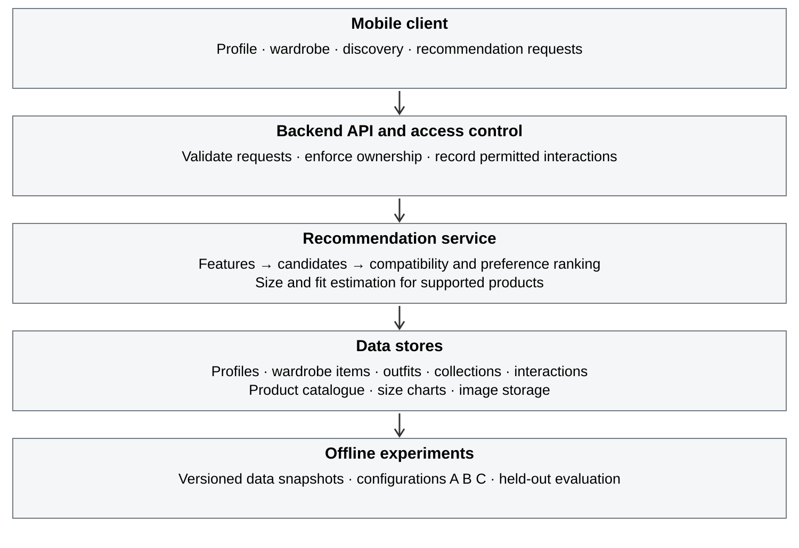

Smart Wardrobe
Manual entry and editing of garments, with images and structured category, color, season and style attributes. Wardrobes will be private by default.
TED University · Computer Engineering
CMPE 491–492 2026–2027
Outfit recommendations, informed by your wardrobe.
An academic project investigating how owned clothing, style preferences and interaction signals can inform outfit, product and size recommendations.
01 / Overview
A clothing recommendation can reflect a person’s taste while remaining difficult to use with the clothes that person owns. Selecting a size introduces a separate uncertainty: a familiar label does not establish how a particular product will fit.
PerDrobe will bring wardrobe context, style preferences and supported fit information into one workflow. Social discovery will provide outfit references and preference signals through likes, saves and follows.
The intended outcome is an integrated prototype and a reproducible evaluation of the recommendation approaches. Improvements in quality will be tested rather than assumed.
02 / Approach
Style What I Own will assemble and rank outfits from the user’s wardrobe. Complete My Wardrobe will consider catalogue additions in relation to those garments.
All capabilities below are planned core work across CMPE 491 and CMPE 492. Product and size recommendations will operate on supported data, without assuming retailer APIs or partnerships.
Manual entry and editing of garments, with images and structured category, color, season and style attributes. Wardrobes will be private by default.
Rank compatible combinations from owned garments in Style What I Own mode, using explicit preferences and available interaction history.
Estimate a suitable size for supported catalogue products from optional measurements, usual sizes, fit preferences and available charts. Abstain when evidence is insufficient.
Map the garment roles in a discovered outfit to compatible items in the current user’s wardrobe. Show substitutions and any unfilled role.
In Complete My Wardrobe mode, rank catalogue items by personal relevance and the useful combinations they enable with owned garments.
Share selected outfits, follow profiles or collections, like outfits and save collections. These actions will supply preference evidence; comments and messaging are outside the core scope.
A closer look
Adapting a reference outfit
to an existing wardrobe
The system will match the roles in a reference outfit to items in the user’s wardrobe, then assess the combination as a whole.
| Reference outfit | Wardrobe item | Adaptation |
|---|---|---|
| White T-shirt | White T-shirt | Reuse owned item |
| Black jeans | Dark blue jeans | Consider substitution |
| White sneakers | White sneakers | Reuse owned item |
| Overshirt | No matching item | Leave role unfilled |
Illustrative example, not a generated result. Suggestions for an unfilled role would be offered separately in Complete My Wardrobe mode.
Beyond the core scope
Two users could request individually relevant, coordinated outfits using only mutually authorized information. The feature may serve friends, siblings, partners or people attending the same event. It depends on completion of the core pipeline and evaluation preparation.
Automatic clothing recognition, visual search and trend collection are optional investigations. Full virtual try-on, cloth simulation and advanced 3D fitting are outside the core scope.
03 / Research
To what extent do style preferences derived from user interactions and personal wardrobe context improve clothing and outfit recommendation relevance over a clothing-attribute baseline?
The initial method will use structured garment attributes and interpretable compatibility scores. Learned ranking or embedding methods will be considered if the available data supports them.
| Model | Inputs | Purpose |
|---|---|---|
| A | Clothing attributes only | Reference ranking based on garment compatibility and content similarity. |
| B | A + explicit preferences and interaction signals | Estimate the incremental value of personalization. |
| C | B + personal wardrobe context | Estimate the incremental value of wardrobe compatibility and reuse. |
Use matched candidate pools and a common catalogue snapshot. For wardrobe-only tasks, every configuration uses owned items; C adds wardrobe features to ranking. Keep tuning separate from held-out testing and prevent future interactions from leaking into earlier features.
Collect relevance judgments through a consent-based evaluation, subject to supervisor agreement and applicable university processes. Participant count and datasets are not finalized.
Precision@K, NDCG@K, user-rated usefulness, diversity, catalogue coverage and median and 95th-percentile API latency. K and rating criteria will be fixed before final testing.
Assess size or fit agreement only on labeled, supported cases, alongside coverage and abstention. No accuracy, user-study or performance results are available at this stage.
These works inform compatibility modeling and ranking. They do not imply selection of their models or datasets for PerDrobe.
04 / Engineering
Authenticated requests, replaceable recommendation models and controlled experiment snapshots.

The proposed stack is Android with Kotlin and Jetpack Compose, Python FastAPI, PostgreSQL and separate image storage. Supabase is an option for authentication and storage. Final choices will follow prototyping.
Development will begin with a manually prepared or permitted catalogue. Source permissions, units and missing fields will be recorded. Wardrobes will be private by default, sharing will be explicit and unsupported size requests will return an insufficient-data response.
05 / Roadmap
The phases below are indicative, not official deadlines. The content baseline, data pipeline and access controls are prerequisites for the recommendation comparison. Optional extensions will not replace core integration or final evaluation.
Fall 2026 · Foundation and baseline
Refine requirements and related work; select permitted data; define schemas and evaluation protocol.
Reviewed scope, data inventory and testable requirements.
Build profile, wardrobe, catalogue and interaction services; integrate the mobile foundation.
Integrated vertical slice with access controls.
Implement configuration A and initial size-chart logic; verify logging and initial recommendation flow.
Baseline prototype, design documentation and evaluation plan.
Spring 2027 · Personalization and evaluation
Implement B and C; integrate Outfit Remix and wardrobe-aware shopping.
Comparable ranking configurations and core workflows.
Refine supported size guidance; run pilot evaluation; consider Duo Match only after core integration.
Frozen experiment protocol and tested core prototype.
Run comparisons and user evaluation; test performance and privacy; stabilize the demonstration.
Final report, presentation, reproducibility materials and updated website.
06 / People
07 / Documents
This page will retain the same address as reports and outcomes are added throughout CMPE 491 and CMPE 492.
The initial proposal defines the scope, recommendation methodology and evaluation plan.
Editable proposal (DOCX) · LMS description (TXT)